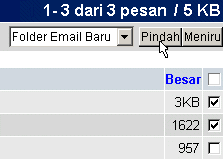

| Ketika anda Memindahkan pesan, anda menghapusnya dari salah satu lokasi, dan memindahkannya ke lokasi yang lain. Ketika anda Meniru pesan, anda menduplikasi dan membuatnya serupa di dalam lokasi yang lain. Untuk meniru atau memindahkan pesan,
pilih
pesan yang anda ingin lakukan dalam salah satu aksi ini, pilih lokasi yang anda inginkan untuk Pindah atau Meniru pesan, dan klik salah satu tombol "Pindah" atau "Meniru" pesan (sesuai dengan keinginan anda).
Perhatikan berikut ini:
Dalam kasus ini, dua pesan yang pertama akan Dipindahkan ke dalam Folder Email Baru. Menu pilihan mengijinkan anda untuk memilih beberapa folder yang sudah ditetapkan, atau beberapa folder yang sudah anda buat (lihat bagian
Mengatur Folder
untuk belajar bagaimana cara untuk membuat dan mengatur folder email).
|